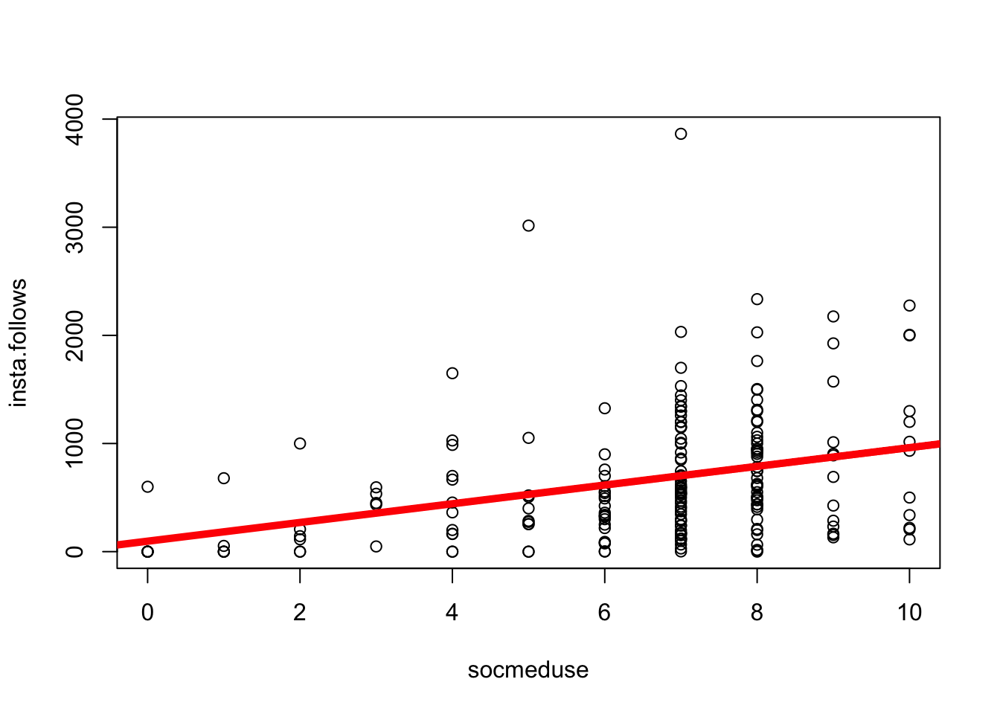

Previously, we discussed how the mean could be used to make predictions of individuals.
\(\huge y_i = \hat{Y} + \epsilon_i\)
\(\Large y_i\) = the DV = the individual’s actual score we are trying to predict (remember \(_i\) = index; a specific individual.)
on the graph: each individual dot (on the y-axis; the x-axis just describes when people submitted the survey.
\(\Large \hat{Y}\) = our prediction (the mean).
on the graph: the solid red line
\(\Large \epsilon\) = residual error = distance between the predicted values of y and the individual’s actual value of y
on the graph: the distance between each dot and the line.
d <-read.csv("~/Dropbox/!WHY STATS/Class Datasets/cal_mini_SP25.csv", stringsAsFactors = T)plot(d$insta.follows, main ="Mean as a Model (Red Line)",xlab ="Index (Row in Dataset)",ylab ="# Of Accounts a Person Follows")abline(h =mean(d$insta.follows, na.rm = T), lwd =5, col ='red')
We also talked about how we could quantify the total error in these predictions, by adding up the squared residual errors (the sum of squared errors).
This number made no sense, but it is a critical statistic, since it quantifies how valid our predictions of individuals were when using the mean to make predictions. To give the statistics some context, we divided the sum of squared errors by the sample size (this is the variance) and then un-squared this number (by taking the square root). This new statistic - the standard deviation - served as an average of residual error that describes how far the average person differs from the mean.
n <-length(na.omit(d$insta.follows)) # total number of individuals; omitting missing data.sqrt(SST/(n-1)) # the equation for the standard deviation
[1] 515.4272
sd(d$insta.follows, na.rm = T) # the function to get the same answer.
[1] 515.4272
As scientists, our goal is to make accurate predictions of individuals. So we would want to find a way to make the sum of squared errors equal zero - have no error in our predictions. The mean is a good starting place, but it’s one number. And people are complex.
ICE BREAKER : if you had to live inside one social media platform, what would it be and why???
THINK ABOUT A LINEAR MODEL : how do you think the variables (above) would help (or not help) us predict the number of accounts someone follows on instagram (insta.follows)? Why / why not???
Variables we think would help us make predictions
Variables we think would not help us make predictions
Variables we have NO IDEA if they would help us make predictions?!?
number of followers (the amount of followers you have is very similar to the amount of people you follow….unless you have an ego :
if you have an ego; then the number of accounts you follow will be lower and less related to the number of accounts that follow you.
if you don’t have an ego; then there should be a strong connection.
time spent on social media :
socmedia.use : people who say they use social media a lot will follow more accounts than people who say they do not use social media.
being thirsty :
hair length
caffeine intake?
height?
The Linear Model in FOUR EASY STEPS.
The model is a line that updates our predictions of one variable based on knowledge of another.
Define your model : what is your DV? What are your IVs? How do you think they will be related???
# of accounts people follow on instagram ~ soc.mediause + error
Graph your DV and IV(s) : make sure the data look good.
par(mfrow =c(1,2))hist(d$insta.follows)max(scale(d$insta.follows), na.rm = T) # looking to see the max value and its z-score to determine whether its an outlier or not
[1] 4.089203
hist(d$socialmed.use)
Plot the relationship between the two variables.
plot(insta.follows ~ socialmed.use, data = d)mod <-lm(insta.follows ~ socialmed.use, data = d)abline(mod, lwd =5, col ='red')
Define the linear model and interpret the intercept and slope of the model.
mod <-lm(insta.follows ~ socialmed.use, data = d) # defines the model; saves as modmod # shows me what is inside mod
plot(insta.follows ~ socialmed.use, data = d) # graphs the relationship abline(mod, lwd =5, col ='red') # draws a red line of width five based on mod

equation for a line : y = a + bX
coef(mod)
(Intercept) socialmed.use
284.71701 43.97825
# THE MODEL : insta.follows = 284 + 43.9 * X## predicted value of insta.follows for someone with a social media usage of 5284+43.9*5
[1] 503.5
\(\Large y_i\) = the DV = each individual’s actual score on the dependent variable.
on the graph: the value of each dot on the y-axis
\(\Large a\) = the intercept = the starting place for our prediction. You can think of the intercept as “the predicted value of y when all x values are zero”.)
on the graph: the value of the line at X = 0
\(\Large X_i\) = the IV = the individual’s actual score on the independent variable (a different variable than the DV).
on the graph: the value of each dot on the x-axis
\(\Large b_1\) = the slope = an adjustment we make in our prediction of y, based on the individual’s x value.
on the graph: how much the line increases in y value when x-values increase by 1 unit.
\(\Large \epsilon_i\) = residual error = the distance between our prediction and the individual’s actual y value.
on the graph: the distance between each individual data point and the line.
Activity : Define another model to predict insta.follows from another numeric IV!!!
# Zara! hist(d$bored)
plot(insta.follows ~ bored, data = d)mod2 <-lm(insta.follows ~ bored, data = d)abline(mod2)
# Height!! (With the outliers)mod3 <-lm(insta.follows ~ height, data = d)plot(insta.follows ~ height, data = d)abline(mod3, lwd =5)
mod4 <-lm(insta.follows ~ H2, data = d)plot(insta.follows ~ H2, data = d)abline(mod4, lwd =5)
# INSTA.FOLLOWERSd$insta.followers[d$insta.followers >10000] <-NA# removing the outlier!mod5 <-lm(insta.follows ~ insta.followers, data = d)plot(insta.follows ~ insta.followers, data = d)abline(mod5, lwd =5)
Evaluating Error
par(mfrow =c(1,2))plot(d$insta.follows, main ="Mean as a Model (Red Line)",xlab ="Index (Row in Dataset)",ylab ="# Of Accounts a Person Follows")abline(h =mean(d$insta.follows, na.rm = T), lwd =5, col ='red')plot(insta.follows ~ socialmed.use, data = d) # graphs the relationship abline(mod, lwd =5, col ='red') # draws a red line of width five based on mod
SST # sum of squared errors when using the mean (we did this an hour ago)
SST - SSM # 1898280 LESS error when I use my model to make predictions.
[1] 1898280
(SST - SSM)/SST # about .05 or 5% reduction in the total error.
[1] 0.04795561
^^^ This is called \(R^2\) ^^^
par(mfrow =c(1,2))plot(d$insta.follows, main ="Mean as a Model (Red Line)",xlab ="Index (Row in Dataset)",ylab ="# Of Accounts a Person Follows")abline(h =mean(d$insta.follows, na.rm = T), lwd =5, col ='red')plot(insta.follows ~ insta.followers, data = d) # graphs the relationship abline(mod5, lwd =5, col ='red') # draws a red line of width five based on mod
SSM5 <-sum(mod5$residuals^2)SSM5
[1] 19751193
SST - SSM5
[1] 19832923
(SST - SSM5)/SST
[1] 0.5010324
BREAK TIME : MEET BACK AT 3:52
Final Project Workshop
Milestone 1. Some Questions
do we need to use the template? [NO!!!! don’t worry about the template; the point of the template is to help you organize and summarize the past reseach you are reading; your TA will need to see that you’ve found and thought about SOME past resaerch.]
i don’t wanna outline an intro. [just a draft…keep it simple]
example outline : sleep quality
THE POINT : sleep quality is how people feel after they sleep, such as how restful people are.
EVIDENCE / WHO CARES : sleep quality is importatn because it’s related to productivity (CITATION), morale (CITATION), and social interaction (CITATION).
THE POINT : screen time is related to sleep quality.
EVIDENCE : In one study, researchers found Blah blah blah.
WHO CARES : Screen use is increasing (CITATION), and important to know how that might be affecting sleep quality in ways that might interfere with well-being.
FOCUS ON :
defining a linear model
figuring out how to measure your variables.
Milestone 1. Defining IV2
Consider the pattern that we found earlier in class. Do you think this pattern will always hold for all people? Or would it change for some people? How so??
plot(insta.follows ~ insta.followers, data = d) # graphs the relationship abline(mod5, lwd =5, col ='red') # draws a red line of width five based on mod
These other variables are called moderator variables, and they can be a good way to identify a second independent variable for your study / help advance science. Life is complex, and some established “effect” or pattern in the data will likely change as a result of some other variable!
I strongly recommend using Google Forms to build your survey. A few tips.
Make sure your DV is measured numerically. A likert scale or number response is fine.
Use Multiple Choice Grid for likert scales.
Each row is an item.
Use a 1-5 scale to make it easy for participants to answer.
Try to make all the items fit on the same “stem”, so it’s easier for participants to get in the flow.
I do not require responses; good to let folks skip questions if they want (and know to exclude their data) rather than force them to give an answer, which might be bad data.
You could add an “attention check” (e.g., “Mark Strongly Agree for this question.”) if you are worried about people not taking your survey seriously. But BETTER to just keep the survey short, and give your participant some motivation (“I can send you the results of my paper if you want!”)
Include demographic variables like age and sex; give people options to self-identify as something outside a forced binary!
Keep categorical variables to just a few levels; you will need a LOT of data to capture variation if there are too many levels! 3-4 groups per variable.
Make sure categorical variables are not better measured numerically; set “response validation” for any open-ended numbers you hope to collect to make data cleaning easier.
Make sure each variable is measured independently of the others. For example, if I want to measure the relationship between happiness and reading, I would want to measure these separately.
I am happy.
I like to read.
Reading makes me happy. This mixes up the two variables (the DV and IV). It could be a cool measure on its own (love for reading scale?).